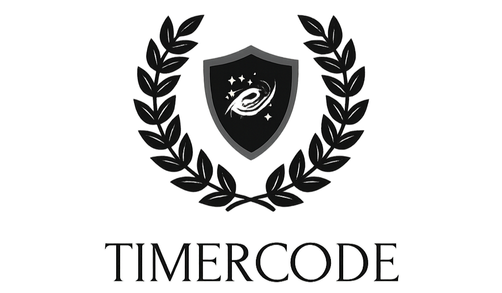

Santa Tracker - TimerCode
Come Back Dec. 24
To know about us, wait until Dec 24. We make Santa trackers from 2020 - 2025, By TimerCode Corp. © , Project By TadeoCreator Lawed and copyrighted.
Follow Santa
2D LIVE
Out City